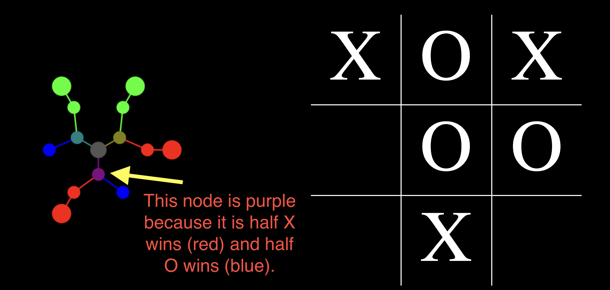

1) This is a game tree! The center point represents the "node" that's being displayed. All lines extending out represent connections to other nodes. You read the tree clockwise for available squares on the board. First branch from the center represents the player taking the first available square (reading across rows first).
2) Whenever a node (some combination of X's and O's) results in a win for X (red), a win for O (blue), or a tie (green), they are depicted as a circle represented by that color. Reading the tree *ahem* "A tie occurs if X chooses the first available square (middle left), O chooses the first available square (bottom left), and X takes the remaining square (bottom right).
3) Each node counts the number of X wins, O wins, and ties that extend from it, then colors itself and its line by blending the red, green, and blue components. The more red a node's circle, the more X wins farther out. The more blue, the more O wins. The more green, the more ties.
4) After working through the contents of the nodes below, a node can check to see if it's a forced variation, meaning that either the X player or the O player WILL win if they play perfectly. Nodes that are forced variations are shown with a larger cicle behind their RGB colored circle. These nodes are exceptionally valuable because they actually win, if played properly.
If it's a win it's a win. Let's hide it so we can see more clearly. But now that you can understand what those lines, circles, and colors mean, feel free to forget all of it and just click around the application finding cool looking nodes! Check out the construction animation or change the View Depth/Animation Speed.
Check out the video below for a 4 minute walkthrough, or click the button to the right to go straight in!